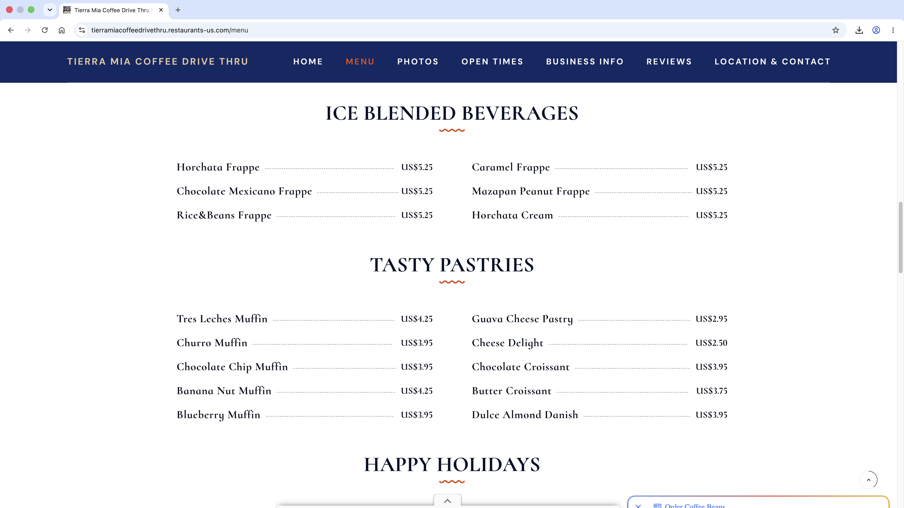
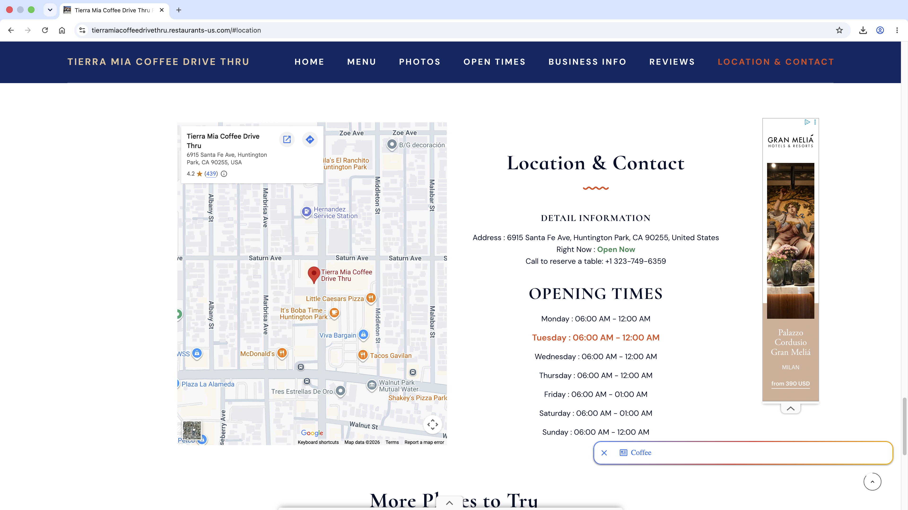
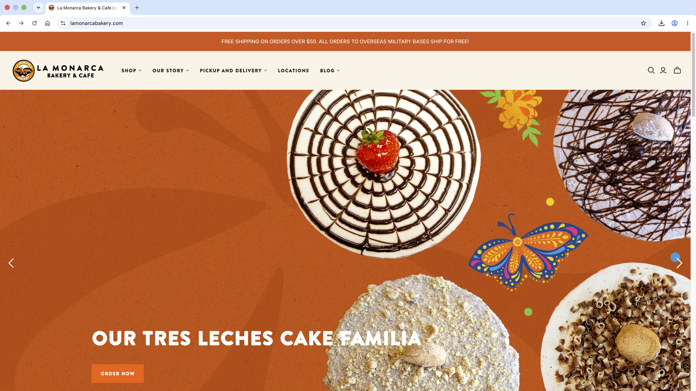
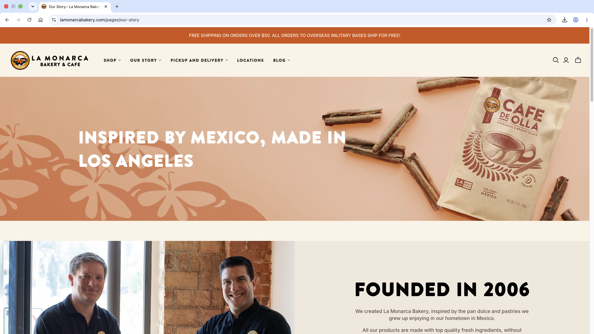
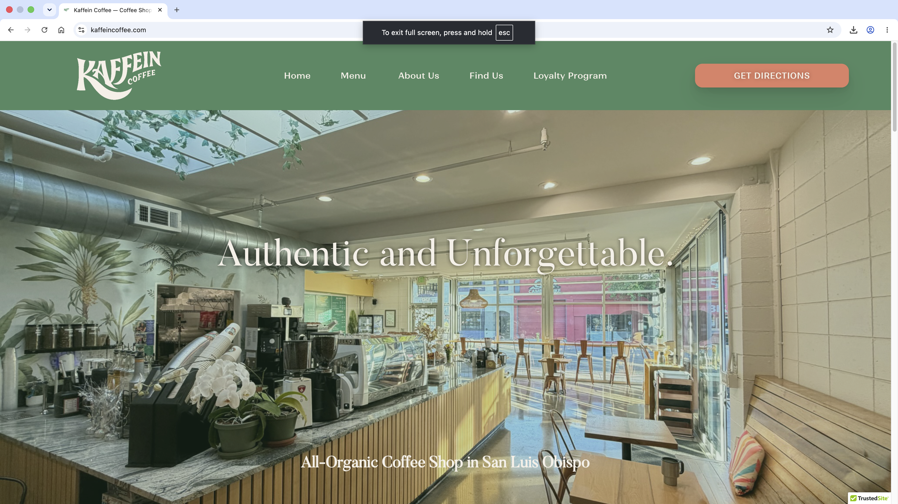
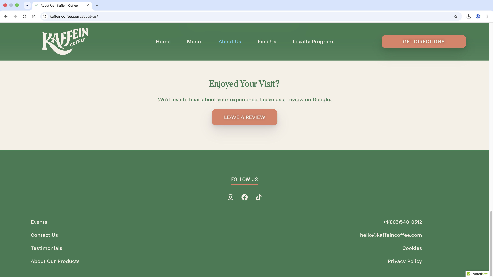

Dulce Vida Café
Dulce Vida Café is a Mexican-inspired Café that serving traditional pastries and comforting coffees that bring back the familiar flavors of a Mexican childhood. From warm conchas to rich café de olla, every bite and sip is made to feel like home.
Dulce Vida Café's website is designed for people who enjoy Mexican-inspired coffee and pastries and wants a cozy, welcomig place to relax. The audience includes young adults, college students, families, and people who grew up with hispanic/mexican flavors and want to reconnect with those familiar tastes.
Visitors will use the site to view the menu, find locations near them, and learn about Dulce Vida Café.
https://www.tierramiacoffee.com






Dulce Vida Café is a Mexican-inspired Café that serving traditional pastries and comforting coffees that bring back the familiar flavors of a Mexican childhood. From warm conchas to rich café de olla, every bite and sip is made to feel like home.
6915 Santa Fe Ave, Hunnington Park, Ca 90255(323)-749-6359
[Image of pastries on table]
[Picture of Horchata Latte]
Dulce De Leche Latte Smooth espresso and creamy milk sweetened with rich dulce de leche $5.25[Picture of Dulce De Leche Latte]
Mazapan Peanut Frappe A creamy, blended frappe inspired by the sweet Mexican mazapan candy, with sweet peanut flavor in every sip $5.25[Picture of Mazapan Peanut Frappe]
Chocolate Mexicano Frappe A rich chocolate frappe, blended to taste like Abuelita chocolate $5.25[Picture of Chocolate Mexicano Frappe]
Tres Leches Muffin A soft, sweet muffin soaked in creamy tres leches for a melt-in-your-mouth treat $3.95[Picture of Tres Leches Muffin]
Churro Muffin A fluffy muffin coasted in cinnamon sugar, inspired by the crispy, sweet flavor of a classic Churro $3.95[Picture of Churro Muffin]
Guava Cheese Pastry A flaky, golden pastry filled with sweet guava and creamy cheese $3.95[Picture of Guava Cheese Pastry]
Conchas (available in chocolate and vanilla coating) A soft, sweet Mexican bread tipped with a signature shell-shapped sugar crust $3.95[Picture of Conchas]
If you’re in the mood for delicious coffee and mouthwatering treats, Dulce Vida Café at 6915 Santa Fe Ave, Huntington Park, CA, has everything you need to satisfy your cravings. Known for its exceptional coffee and signature baked goods, this cozy café offers a unique blend of flavors in every cup and bite. One of the standout items at Dulce Vida Café is our irresistible Churro Muffin. Perfectly soft with a delightful crunch from the sugar and cinnamon top, it pairs wonderfully with our Horchata Latte, a refreshing pick-me-up that’s ideal for any time of day. For those who enjoy a flaky pastry, our Guava Cheese Pastry is a must-try. Combined with a smooth Dulce De Leche Latte, it's a delightful contrast of flavors that will leave you coming back for more. If you're a fan of the rich, creamy taste of chocolate, be sure to indulge in our Chocolate Mexicano Frappe for a perfect balance of sweetness and coffee.
[Image of pastries and drinks
805-756-3663
Hours
Monday–Friday: 6:00 AM–10:00 PM
Saturday–Sunday: 6:00 AM–12:00 AM
[Image of seat with chair in cafe]